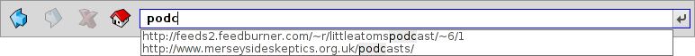

Español
Español Català
Català Deutsch
Deutsch English
English Français
Français Italiano
Italiano Magyar
Magyar Polski
Polski Português
Português Português (Brazil)
Português (Brazil) Română
Română Slovenčina
Slovenčina Suomi
Suomi Svenska
Svenska 中文 ［中文］
中文 ［中文］ Русский
Русский Українська
Українська 日本語
日本語 WebPositive
WebPositive
| Deskbar: | ||
| Ubicación: | /boot/system/apps/WebPositive | |
| Configuración: | ~/config/settings/WebPositive/ - Archivos de configuración, "cookies", caché e historial de navegación | |
| ~/config/settings/WebPositive/Bookmarks - Todos los marcadores como archivos individuales |
WebPositive, o Web+, abreviado, es el navegador Web nativo de Haiku. Una parte de su nombre viene un poco del navegador sencillo del BeOS, NetPositive, y otro poco de sus modernos cimientos: el WebKit. Esta biblioteca de código abierto de rasterización de HTML también está en el corazón de otros navegadores populares, como Safari para Mac OS X y el Chrome de Google. Al usar el WebKit, siempre en evolución, será capaz de mantenerse actualizado con las nuevas tecnologías Web.

La interfaz de WebPositive es fácil de usar: Bajo la barra de menú existe una barra con botones para navegar a los sitios anteriores y siguientes de su historial, uno para detener la carga de una página y (opcionalmente) un botón para ir a su página de inicio.
Luego viene el campo de ubicación donde se ingresa la dirección URL de un sitio.
Bajo esta barra de navegación puede encontrar las páginas web. Es posible abrir muchas páginas en paralelo cargandolas en sus propias pestañas.
En la parte inferior de la ventana hay una barra de estado, que muestra el URL correspondiente al sitio que se está cargando, o el enlace del sitio que señala con el puntero del mouse. Mientras una página está cargando, aparece una barra de progreso a la derecha.
 Configuración
Configuración
Puede abrir el panel de bajo el menú para configurar algunos aspectos esenciales de WebPositive.

La primera pestaña muestra los ajustes generales: Cuál archivo o URL sirve de , qué sitio se usa como , cuál se debe utilizar para lo que baje de internet.
Dos menús emergentes le permiten decidir cual página cargar, si alguna, cuando abre una nueva ventana o pestaña.
A través de las siguientes casillas de selección puede evitar mostrar la barra de pestañas cuando solamente hay una página abierta.
La interfaz de WebPositive puede esconderse automáticamente en pantalla completa, y el ratón se puede esconder automáticamente cuando no se mueve por un rato.
Finalmente, puede decidir incluir un botón "Página de Inicio" en la barra de navegación y establecer el número de dias que el navegador puede recordar los sitios que ha visitado en su historial.
En la segunda pestaña puede escoger la tipografía utilizada para fuentes estándar, serif, no serif y mono espaciadas y establecer sus tamaños predeterminados.
La última pestaña es para configurar un servidor proxy.
Navegar
Si alguna vez ha usado un navegador, WebPositive no debería sorprenderle. En lugar de mostrar cada menú y característica, veamos algunos puntos especiales.

Las pestañas se crean con el botón + a la derecha de la barra de pestañas o, si hay suficiente espacio, haciendo doble clic en un lugar de esa barra. Si hay más pestañas abiertas que las que caben en la barra, se activan los botones de desplazamiento < >, permitiendo desplazarse hacia la izquierda y derecha en la barra de pestañas. El botón ∨ en el extremo derecho muestra un menú desplegable con todas las pestañas abiertas para una navegación aún más rápida.
Hacer clic en un enlance con el botón de en medio abre la página en una nueva pestaña en segundo plano. Si mantiene presionado el botón MAYÚS (SHIFT) mientras hace clic con el botón de en medio, abre la pestaña en primer plano.
Desde el menú puede y el contenido de una página. También está la opción de , que deja las imagenes en su tamaño original.
Si transiciona a modo de pantalla completa y ha activado el ajuste de esconder la interfaz, desaparecerá después de un momento. Para deslizarlo temporalmente de vuelta, simplemente mueva el puntero del ratón a la parte superior de la pantalla.
- 
Mientras escribe en el campo de ubicación, el navegador encaja la línea que escribe con sitios que ha visitado anteriormente y los muestra bajo el campo de texto. Puede seguir añadiendo más letras para acortar la lista de sitios posibles, o puede escoger una entrada con ↑ o ↓. ENTER cargará la página. También puede usar el botón al extremo derecho que también sirve para recargar la página.
Las líneas de texto que no se reconocen como URL serán convertidos en una búsqueda de Google, así que el campo de ubicación juega doble función como método abreviado para búsqueda en la web.. Dar clic con el botón derecho abre un menú contextual el cual, dependiendo del objeto al que dió clic, ofrece abrir el enlace en una nueva ventana o en una nueva pestaña, descargar el objeto, etc.
muestra una barra de búsqueda en la parte inferior para iniciar una búsqueda dentro de la página. Las coincidencias se resaltan en la página.
Marcadores
Los marcadores de WebPositive son gestionados como archivos y carpetas bajo ~/config/settings/WebPositive/Bookmarks/. El añadir un marcador creará un nuevo archivo ahí. Puede abrir esa carpeta rapidamente con

Puede cambiar el título, nombre, URL de un marcador, e ingresar palabras clave igual que con cualquier otro archivo con atributos. Sólo debe asegurarse que tenga todas sus columnas mostrándose en el menú del Tracker, luego seleccione un archivo, presione ALT E y comience a editar el atributo; cambie entre las columnas de atributos con el TABULADOR.
Puede ordenar los marcadores en diferentes carpetas creados por Ud. mismo.
Al usar el Tracker para gestionar y navegar los marcadores puede elevar sus características unicas para encontrar rapidamente lo que busca.
Al activar el en las Preferencias del Tracker, puede acortar instantaneamente su lista de marcadores a los que encajan con su filtro. Con un par más de ↑ o ↓ para mover la selección y presionando ENTER abriran el sitio. Asegúrese que se muestran todos las columnas de atributos para que el filtro sea aplicado al nombre, título, URL y las palabras clave.
Para que esto funcione, todos los marcadores deben mantenerse en la carpeta ~/config/settings/WebPositive/Bookmarks/ y solo las copias deben ser ordenadas en carpetas personalizadas para uso en los del menú de WebPositive (si acaso). Además, también ayuda llenar el campo con los atributos de palabras clave…
Descargas
abre una ventana con un listado de todas las descargas anteriores y actuales:

Las descargas en proceso se muestran con una barra de progreso y, similar a cuando se copian archivos en el Tracker, también se muestra información sobre el tiempo estimado de finalizado, tamaño de archivo y velocidad de descarga. Los botones a la derecha le permiten y una descarga, o el archivo, o su entrada de la lista. Los botones y en la parte de abajo hace esto para todas las entradas en el listado. Los archivos "extraviados" son aquellos que se han eliminado en el ínterin.
Si un archivo que está en proceso de descarga lo mueve a la Papelera, la descarga se detendrá. También podrá notar que su ícono se vuelve "fantasma".
Generalmente WebPositive es muy tolerante cuando se trata de gestionar archivos con el Tracker. Los archivos se pueden renombrar o mover aún cuando se estan descargando, e incluso después de haber sido descargados, los cambios se reflejan en la ventana de Descargas.
¿Alguna vez se preguntó el sitio origen de una imagen, paquete, o cualquier archivo descargado? Es posible rastrear esa información abriendo el archivo con DiskProbe y mirando su atributo META:url.
¿Quiere mostrar la dirección URL permanentemente en su carpeta de descargas? Sólo debe copiar un marcador a la carpeta, y mostrar la columna del atributo URL del marcador, y después podrá quitar el archivo del marcador.
Teclas de acceso rápido
Aquí hay algunos métodos abreviados de teclado:
| ALT T | Abre una nueva pestaña. | |
| ALT W | Cierre la pestaña actual. | |
| ALT N | Abre una nueva ventana. | |
| SHIFT ALT W | Cierra la ventana actual. | |
| ALT ENTER | Alterna el modo pantalla completa. | |
| ALT R o F5 | Recarga la página actual. | |
| ALT H | Abre la página de inicio. | |
| ALT D | Muestra/esconde la ventana de descargas. | |
| ALT F | Muestra la barra de búsqueda para buscar en la misma página (se esconde con la tecla ESC). | |
| ALT B | Crea un marcador de la página actual. | |
| ALT M | Administra marcadores, abriendo la carpeta de Marcadores. | |
| ALT ← | Página previa en el historial. | |
| ALT → | Página siguiente en el historial. |